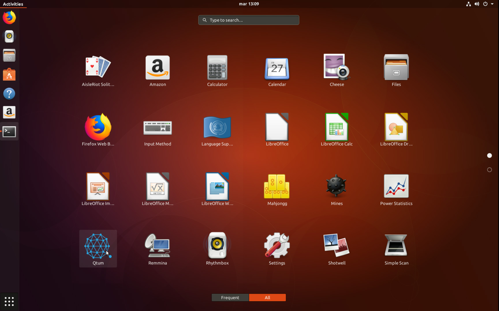

Using QTUM official Repository on Ubuntu 16.04-17.10, Debian and Archlinux
We've published our official Qtum repository on http://repo.qtum.info or http://repo.qtum.org, this repository supports the following distributions:
Debian
- 8.x (Jessie)
- 9.x (stretch)
- Testing (Buster)
- Unstable (Sid)
Ubuntu
16.04 - 17.10
Mint
18.x
Archlinux
More distributions will be added in the future, this document will be updated to reflect those changes.
Tutorial focus
This tutorial assumes you have a basic knowledge of linux and terminal usage, the entire process uses the linux terminal.
Installing on Ubuntu
Obtaining signing key
First, we need to obtain the Qtum signing key from the ubuntu keyserver, here's how:
sudo apt-key adv --keyserver keyserver.ubuntu.com --recv-keys BF5B197D
This will download and add the Qtum signing key to your linux install.
Adding repository to your APT sources.
sudo su - Sudo to root first
echo "deb http://repo.qtum.info/apt/ubuntu/ xenial main" >> /etc/apt/sources.list
This will add the repository to your APT sources file. NOTE: Please remember to change "xenial" for your Ubuntu version codename
Refreshing APT sources and installing Qtum
sudo apt update && sudo apt install qtum
By doing this, we'll update our sources and install Qtum on our ubuntu Box
Installing on Debian
Obtaining the Signing key in Debian is a bit different, but not complicated
wget -qO - http://repo.qtum.co/apt/public.key | sudo apt-key add -
This downloads and installs the Qtum public key
Adding repository to your APT sources.
sudo su - Sudo to root first
echo "deb http://repo.qtum.info/apt/debian/ stretch main" >> /etc/apt/sources.list
This will add the repository to your APT sources file. NOTE: Please remember to change "stretch" for your Debian version codename
Refreshing APT sources and installing Qtum
sudo apt update && sudo apt install qtum
By doing this, we'll update our sources and install Qtum on our debian Box
Launching Qtum
Launching is simple, we just go to our applications menu and scrolldown/search for qtum


This works, we can launch our Qtum wallet and start syncing!